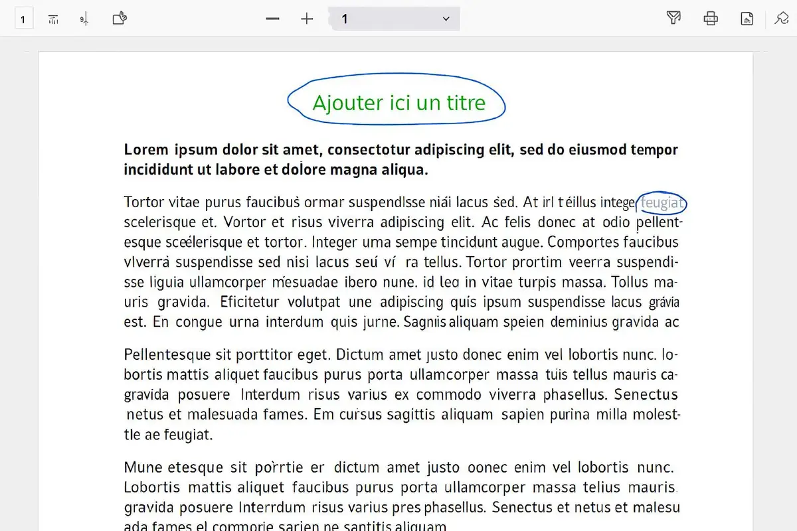

Pourquoi les fichiers PDF posent-ils souvent problème ?
Le format PDF est conçu pour empêcher les modifications accidentelles. C’est très utile pour conserver un document tel qu’il a été envoyé, mais cela peut devenir gênant lorsqu’il faut remplir un formulaire, ajouter une signature ou corriger une information. Heureusement, des outils simples existent aujourd’hui.
Modifier un PDF sur ordinateur (Windows ou Mac)
Depuis un ordinateur, vous pouvez modifier un PDF facilement grâce à des sites gratuits, sans rien installer :
- iLovePDF
- PDF2Go
Ces services permettent notamment :
- d’ajouter du texte ou une signature
- de remplir un formulaire
- de fusionner ou séparer plusieurs fichiers PDF

ℹ️ À savoir : ces outils ajoutent du contenu par‑dessus le document. Pour modifier directement le texte original, il existe Adobe Acrobat, une solution complète mais payante.
Modifier un PDF directement dans votre navigateur Internet
Certains navigateurs proposent déjà des outils intégrés. C’est le cas de Mozilla Firefox et Microsoft Edge.
- Ouvrez votre fichier PDF
- Ajoutez du texte, un dessin ou un surlignage
- Enregistrez le document
✅ Cette solution est simple et ne nécessite aucune installation.
Modifier un PDF sur téléphone ou tablette Android
Sur Android, l’application la plus simple est WPS Office. Elle permet de lire et modifier des documents PDF, Word et Excel.
- Application gratuite
- Disponible sur le Google Play Store
- Parfois déjà installée sur certains téléphones
Modifier un PDF sur iPhone, iPad ou Mac
Les appareils Apple disposent d’outils intégrés :
- Aperçu sur Mac pour signer et annoter
- Notes sur iPhone et iPad (tapez deux fois pour afficher les outils)
D’autres applications gratuites ou payantes sont disponibles sur l’App Store si besoin.
← Retour aux tutoriels